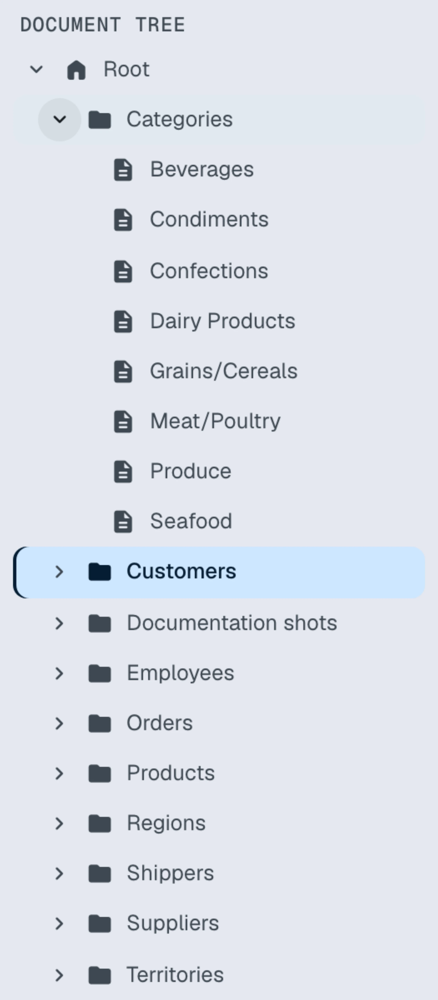
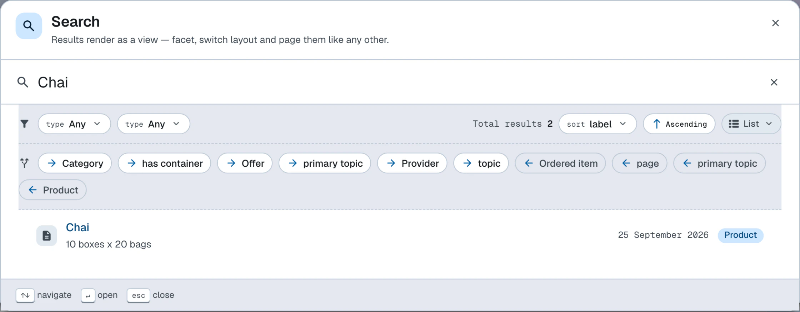

Browse data
Browse, navigate and search local and remote data
Linked Data browser
LinkedDataHub has a built-in Linked Data browser which is accessed through the navigation bar. Enter a http:// or https:// URL and
press Enter or click the search button. Try, for example:
- https://unesco-thesaurus.demo.linkeddatahub.com/concepts/concept3683/ — a concept in another LinkedDataHub dataspace (the one the Northwind Beverages category maps to)
- https://dbpedia.org/resource/Copenhagen — an arbitrary Linked Data resource on the open web
The browser supports all standard RDF formats as well as JSON-LD embedded in an HTML
page's <script> elements, which is often used to publish schema.org metadata.
When the data loads successfully, you can navigate it the same way as your local documents, switch between different layout modes etc. You can also add the data into your dataspace.
If an RDF document cannot be read from the supplied URL, an error message will be shown.
Document tree
The document tree in the left sidebar gives a quick overview of the dataspace's document hierarchy; the user interface reference describes the widget.

Class-based navigation
In addition to navigating by document hierarchy, you can navigate by class: the Classes list in the left sidebar shows the classes (rdf:type values) that occur in your data; the user interface reference describes the widget.
Using class-based navigation
- Open the left sidebar — slide the mouse to the left edge of the screen
- Find the Classes list
- Click on any class to open a dialog listing all instances of that class in your dataspace
When to use class-based navigation
Class-based navigation is most useful when:
- Finding all instances of a type
- Quickly locate all resources of a particular class, regardless of where they are stored in the document hierarchy
- Exploring domain concepts
- Browse your data organized by business concepts (e.g. all Customers, all Orders) rather than by container structure
- Cross-container queries
- View instances that span multiple containers in a single unified view
The list is derived from the data itself and respects your access control settings.
Text search
You can look up resources by typing a phrase (a few letters are enough) into the search box at the top of the left sidebar.
A dropdown list will appear if there are any matches. Use ↑/↓ or click to select a result, and you will be redirected to its document.
The matching is done by looking for substrings using SPARQL regex() in common literal properties such as dct:title, rdfs:label, foaf:name etc. — equivalent to a query of this shape:
PREFIX dct: <http://purl.org/dc/terms/>
PREFIX rdfs: <http://www.w3.org/2000/01/rdf-schema#>
PREFIX foaf: <http://xmlns.com/foaf/0.1/>
PREFIX skos: <http://www.w3.org/2004/02/skos/core#>
SELECT DISTINCT ?resource
WHERE {
GRAPH ?g {
?resource ?labelProperty ?label .
VALUES ?labelProperty { dct:title rdfs:label foaf:name skos:prefLabel }
FILTER regex(str(?label), "cha", "i") # on Northwind, matches "Chai", "Chang", "Chartreuse verte"…
}
}
The same widget is used for autocomplete inputs in create and edit forms.

Structured search
You can use SPARQL to query data from the dataspace's SPARQL service.
Backlinks
Backlinks open in a popover anchored to each block's links button. They display a list of resources which have properties with the block's resource as the object.
Continue to the Query data guide, or read more about the user interface.